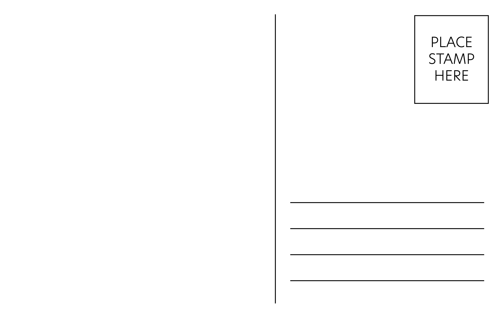

Around the World in NYC
by Chloé Nini
Old Tbilisi Garden
174 Bleecker St, West Village
Ajaruli (dough stuffed with georgian cheese, topped with an egg and butter).

Awash
338 E 6th Street, East Village.
Vegetarian Platter on injera bread.
Manousheh
193 Bleecker St, West Village
Manousheh cocktail (thyme and cheese flatbread).
Café Himalaya
78 E 1st Street, Lower east side
Gyathuk Ngopa (Sautéed egg noodles with fresh veggies and chicken).
Smør
441 E 12th Street, East Village
Toast Skagen (Shrimp salad,roe,dill,lemon on sourdough)
Tabaré
221 S 1st St, Williamsburg
Chivito (sandwich of churrasco, mozzarella, ham, tomatoes, mayo, olives).
Zooba
100 Kenmare St, Nolita
Koshary (pasta,rice,lentils with sauces and garnish)